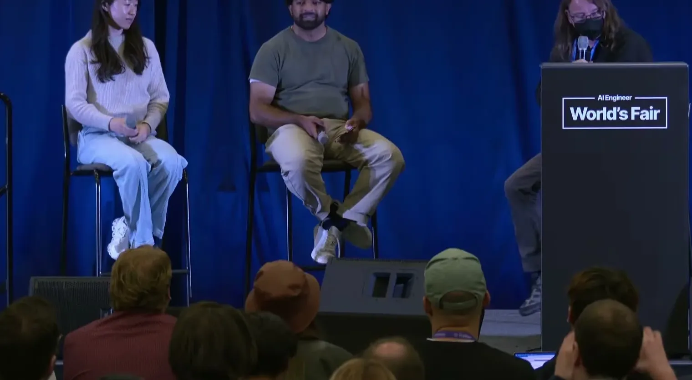
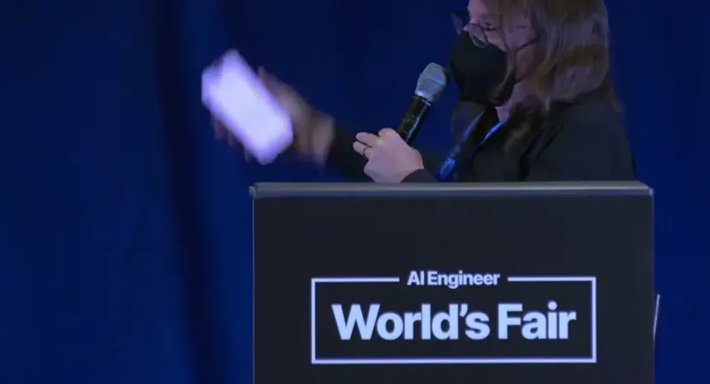
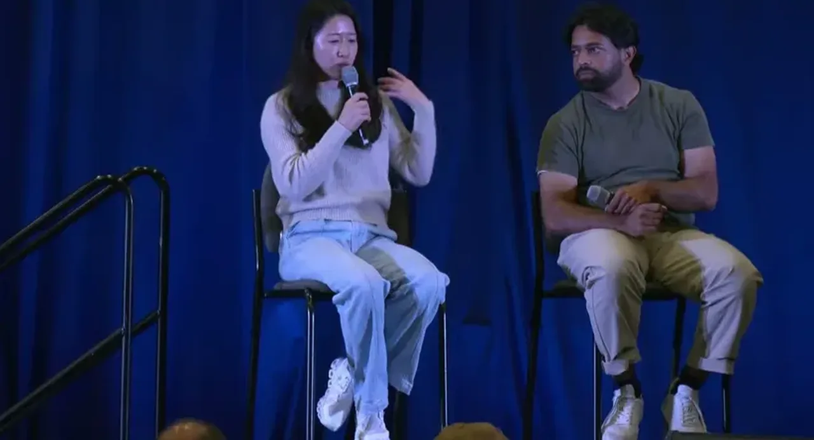
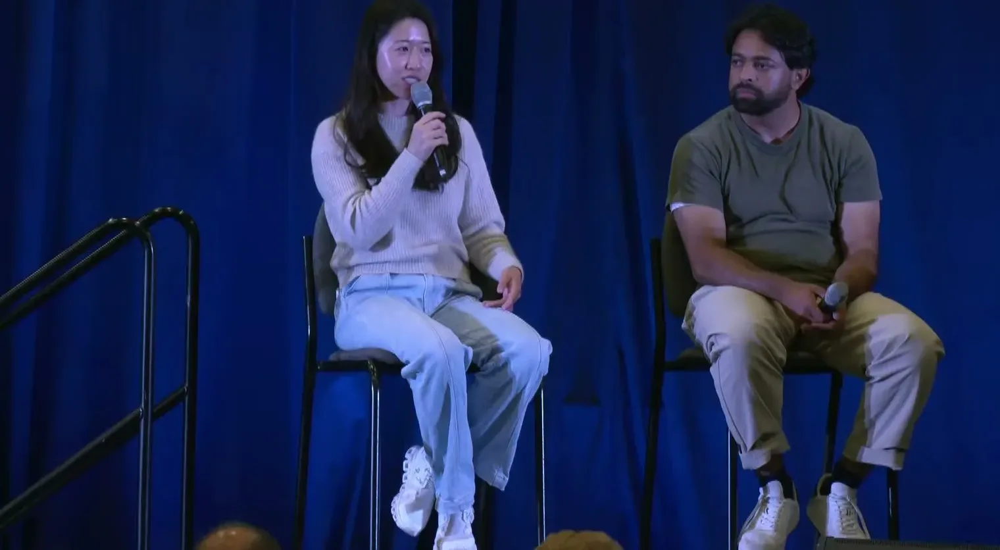
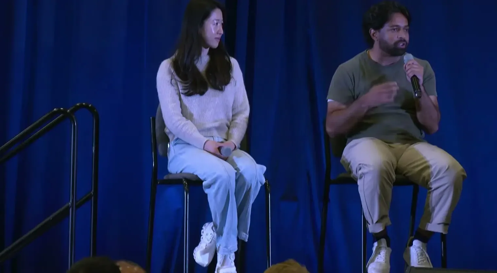
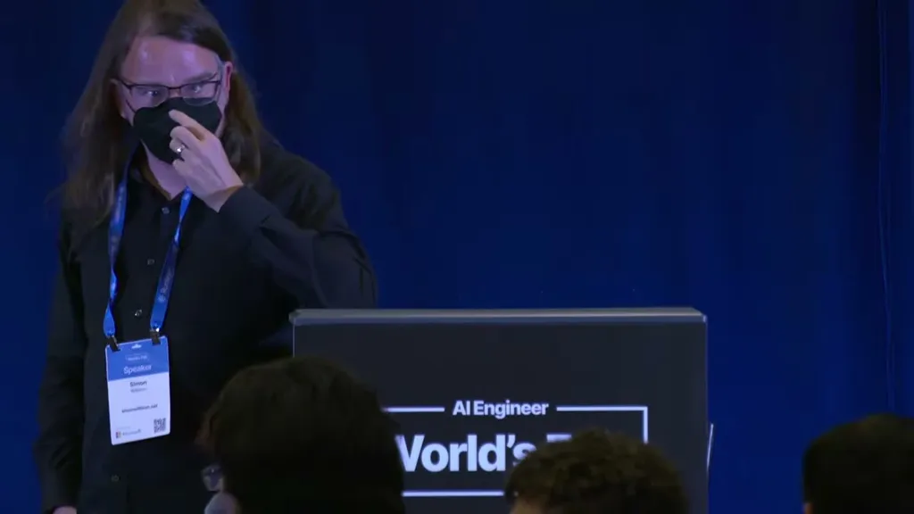
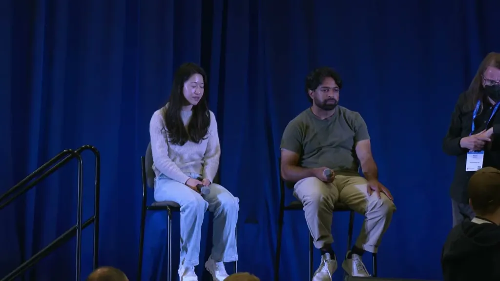

Gives internal numbers and process detail (PR landing rate, system-prompt token cuts, auto mode's classifier design) for anyone deciding whether to trust auto mode / Claude Tag-style always-on agents in a real workflow, plus a concrete p...
This traces how rising model trust let Anthropic hand most PR review to Claude Code itself, though the underlying safety evals are not yet published (ours).
“you would give it this task and you would have to closely monitor every single little thing that it tried to do. Uh I remember I would read every permission prompt extremely carefully. I would frequently say no”
said at 01:33“our internal version of claw tag lands 65% of our product PRs right now”
said at 07:46“for the changes that are at the outer layers, we actually have quad code review fully review those”
said at 16:04“some of the patterns we saw is that um we were over constraining Claude, right? So I think the initial like maybe Opus 4ish kind of models wanted a lot of examples and uh removing examples was extremely helpful”
said at 21:42“there's a or a bash call, uh there's a sonet classifier that is judging the tool and also the context of the conversation, your instruction”
said at 32:55“We've done extensive bashing. We have thousands of eval. We've commissioned many red team teamers to create adversarial environments in order to trick cloud code into doing bad actions. and we've mitigated every single issue that they found”
said at 31:37(ours) The claim that few-shot examples now hurt frontier-model prompting (versus the long-standing advice to always give examples) is the most operationally actionable point in the talk if it generalizes beyond Claude Code's own system prompt, but it's stated as an internal observation, not backed by a published eval, so it's worth testing rather than adopting outright.







| Stance | Claim | t |
|---|---|---|
| asserts | Early Claude Code with Sonnet 3.7 required reading every permission prompt carefully and often saying no; later model generations let the team delegate more implementation and freed time for product/design thinking. | 01:33 |
| asserts | Anthropic's internal version of Claude Tag lands 65% of the product engineering team's PRs. | 07:46 |
| asserts | The Claude Code system prompt was cut about 80% for frontier models, partly by removing few-shot examples that were found to constrain rather than help the newer models. | 21:42 |
| asserts | For core/critical code, code owners still manually review every change, but increasingly Claude Code itself fully reviews changes at the outer layers, reached through a six-plus-month trust-building process. | 16:04 |
| asserts | Auto mode uses a Sonnet classifier that judges each tool or bash call against the user's instructions and conversation context to decide dynamic permissions. | 32:55 |
| asserts | Auto mode has been used and hardened inside Anthropic since January, with extensive evals and commissioned red-team testers, and evals will be published. | 31:37 |
| asserts | For remote environments, Anthropic supports credential injection so an agent's tool credentials (e.g. Data Dog) are usable by the agent but not accessible to it, inserted on the fly when the request is made. | 37:16 |
| asserts | Claude Tag's memory today is channel-specific, implemented as a markdown file per channel rather than a separate data store. | 50:44 |
Machine-readable copy embedded in this page (script#ontology) and in the corpus ontology.